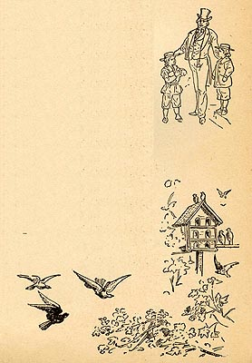

|
 Just as
Miss Watson sets Jim free in her will after the Widow tries
to prevent her from selling him down the river, Roxy is
manumitted by Percy Driscoll's will. A month earlier,
Percy's brother, Judge Driscoll, "bought Chambers. He had
heard that Tom had been trying to get his father to sell
the boy down the river, and he wanted to prevent the
scandal--for public sentiment did not approve of that way
of treating family servants for light cause or for no
cause." This is the image which accompanies that text, and
which draws a similarly benign picture of slavery: the
Judge reaches out to both "Tom" and "Chambers," whose
symmetrical postures and identical clothing suggest a
family grouping. This theme of happy families is echoed in the page's other illustration, of birds flocking together. There is no direct textual basis for the picture, but the margins of Pudd'nhead Wilson contain a number of these pastoral images. The Barrett Collection, UVA PS 1317 .A1 1894 |